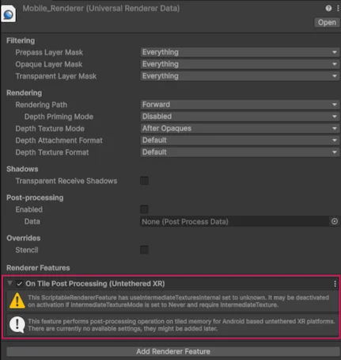

Learn about on-tile post-processing in URP.
On-tile post-processing leverages tile-based GPUs to apply post-processing effects while the rendered image data is in the GPU’s tile-based memory. On-tile post-processing enables you to use certain URP post-processing techniques, which otherwise you should avoid.
Refer to the following sections to learn about on-tile post processing.
On non-tile-based GPUs, Unity applies post-processing effects after it renders the entire frame and stores it in the framebuffer. On tile-based GPUs, standard post-processing stores each tile to the framebuffer in main memory, then loads it back to apply the effects. These load and store operations use GPU bandwidth and energy.
With on-tile post-processing, post-processing effects are applied per-tile, before the tile is moved to the framebuffer in the main memory. This can reduce GPU bandwidth usage which reduces energy usage on tile-based GPUs, because the tile is only stored in its processed state. On-tile post-processing enables you to use supported post-processing techniques in your URP project, and improve the graphics in your application.
The URP on-tile post-processing feature is available as a renderer feature. To learn more about renderer features, refer to Add a Renderer Feature to a URP Renderer.
To use on-tile post-processing your project must meet the following requirements:
The following URP post-processing techniques support on-tile post-processing:
Tip: To confirm that post-processing runs on-tile rather than through the texture sampling fallback, use the Render Graph Viewer to inspect the framebuffer input usage of your render passes on device.
To enable on-tile post-processing in your project:
Open your URP Renderer in the Inspector window.
Ensure Post-processing is disabled.
Enable Tile-Only Mode.
The Tile-Only Mode setting enables on-tile rendering. If on-tile rendering is disabled, on-tile post-processing falls back to a texture sampling method. This method produces visually identical results, but doesn’t keep the data in tile memory, so it doesn’t reduce GPU bandwidth. To check which path your project uses, inspect your render passes in the Render Graph Viewer.
Under Renderer Features, enable On Tile Post Processing.

When you enable on-tile post-processing, Unity applies any supported post-processing techniques you enable in your project on-tile on the target device. Enabling on-tile post-processing doesn’t enable any post-processing technique automatically. To enable a technique, add its volume component to a Volume in your scene.